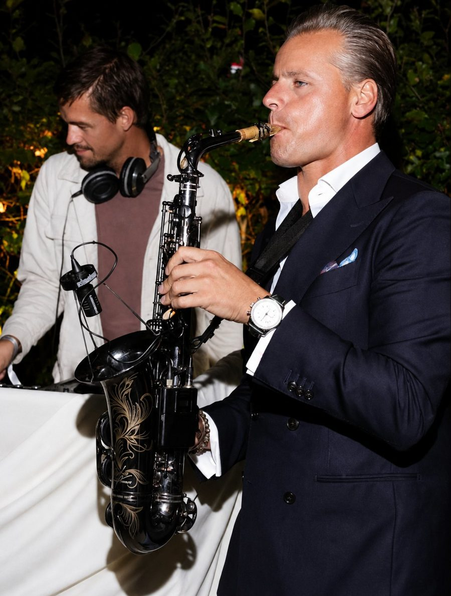

OPDRACHT
CreativeGrounds wilde midden in een woonwijk in Amsterdam-Zuid een luxe tuinfeest geven. Met goed geluid voor de dj's en de saxofonist, en zo weinig mogelijk impact op de buurt.
Een luxe tuinfeest midden in een woonwijk

Het Amsterdamse ondernemersnetwerk CreativeGrounds vierde zijn vijfjarig bestaan met een tuinfeest voor 150 ondernemers, met dj's en een saxofonist.
CreativeGrounds wilde midden in een woonwijk in Amsterdam-Zuid een luxe tuinfeest geven. Met goed geluid voor de dj's en de saxofonist, en zo weinig mogelijk impact op de buurt.
We zetten krachtige systemen in voor korte afstand, die niet ver dragen. Tijdens het feest maten we regelmatig het geluidsniveau. Licht, geluid en de nieuwste dj-gear ondersteunden het programma.
Speeches, dj's en muzikanten gingen naadloos in elkaar over. De gasten waren uitbundig, zonder overmatige overlast voor de buurt. De techniek ging volledig op in de partytent.
“Bij CG houden we van een chique uitstraling bij alles wat we doen. Zelf hadden we het hele event al tot in de puntjes verzorgd, en de AV ging daar onzichtbaar in mee, niet op de voorgrond maar als onderdeel van de gehele look & feel.”CreativeGrounds